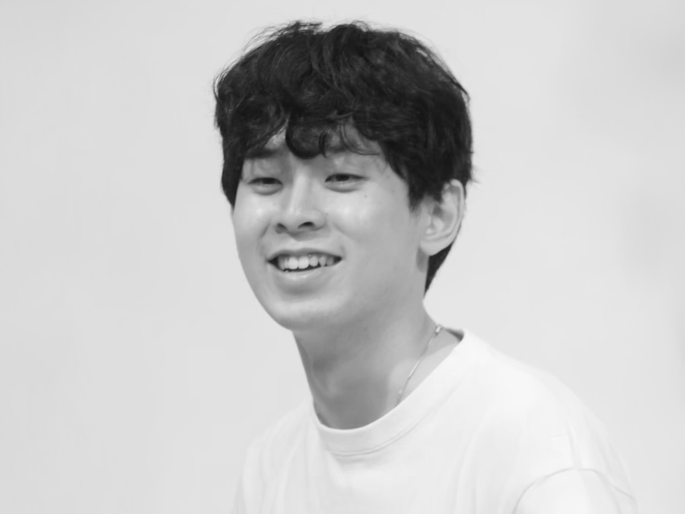

峰村 明瑠 | Akeru Minemura
2001年生まれ、板橋育ち
東京都立大学プロダクトデザイン修士 トランスポーテーションデザインスタジオ在籍 (田中聡一郎研)
大学では、インダストリアルデザインを軸にデザイン思考、人間中心設計、トランジションデザイン等のデザイン分野を横断しながらデザインを学んでいます。
Born in 2001. Raised in Itabashi, Tokyo.
Tokyo Metropolitan University, Product Design (MA), Transportation Design Studio (Supervisor: Soichiro Tanaka).
At university, I study design across industrial design, design thinking, human-centered design, transition design, and related fields.
instagram / photoPF / LinkedIn
2023-
東京都立大学大学院 システムデザイン研究科 修士課程（プロダクトデザイン）
2019-2023
東京都立大学 システムデザイン学部 インダストリアルアート学科
2016-2019
都立新宿高等学校